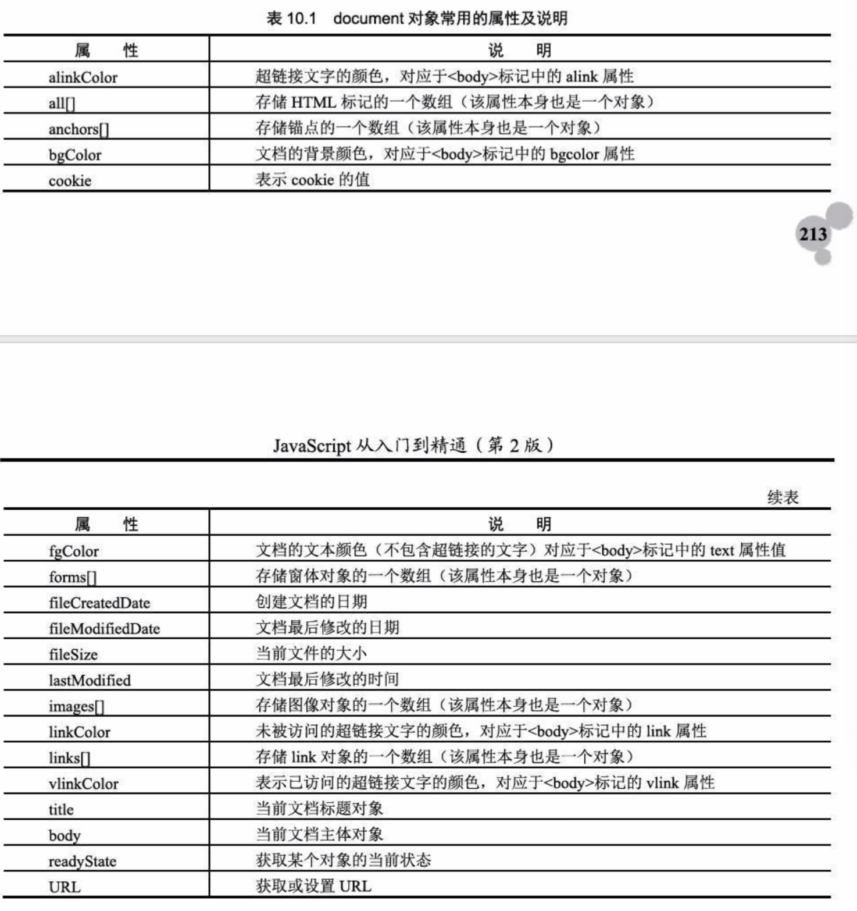
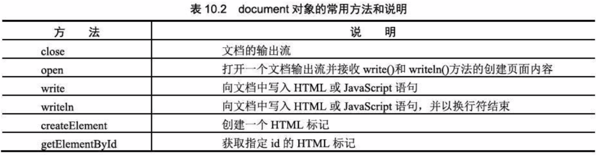
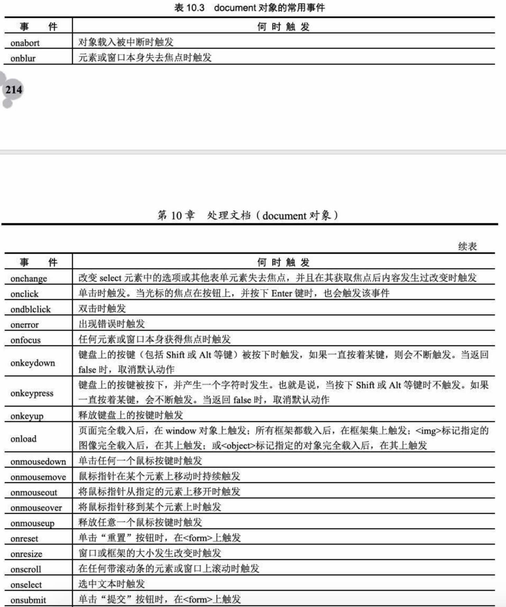
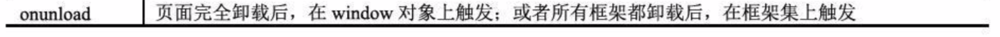

10.1、document对象概述
10.2、document对象的常用属性、方法和事件
10.2.1、document对象的属性

10.2.2、document对象的方法

10.2.3、document对象的事件


JavaScript论坛
10.3、document对象的应用
10.3.1、超链接文字颜色设置：alinkColor、linkColor、vlinkColor
10.3.2、文档的前景色和背景色：bgColor、fgColor
10.3.3、查看文档创建日期(fileCreatedDate)、修改日期(fileModifiedDate)和文档大小(fileSize)
10.3.4、动态标题栏:document.title = "";
10.3.5、获取并设置URL:document.URL
10.3.6、获取对象的当前状态:readyState、
10.3.7、在文档中输出数据：write()、writeln()
10.3.8、打开新窗口并输出内容：open()、close()
10.3.9、动态添加一个HTML标记
10.3.10、获取文本框并修改其内容